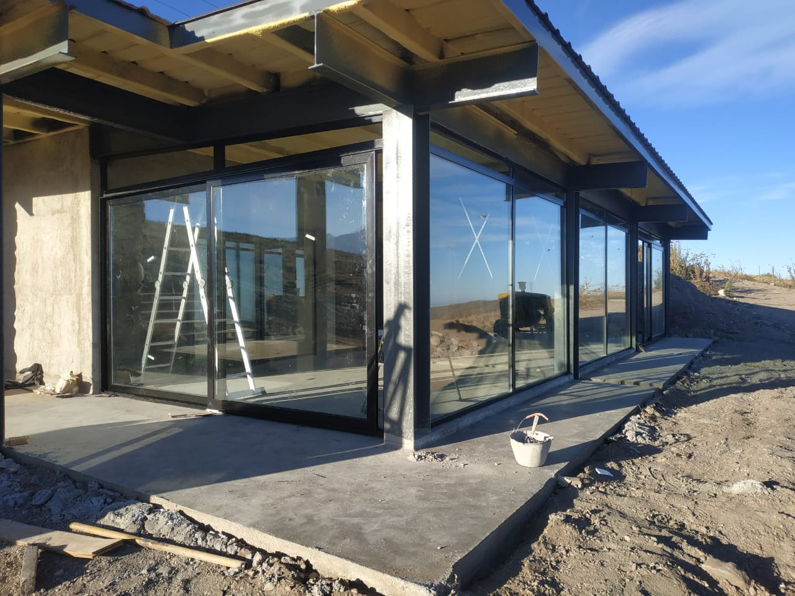
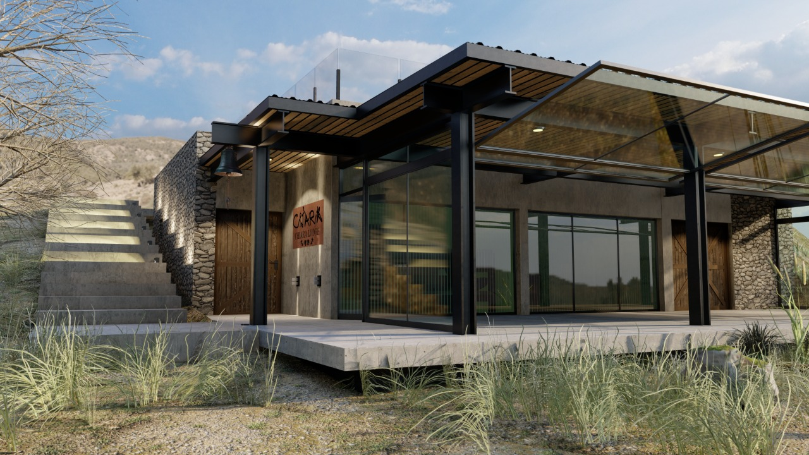

Carpintería de obra
Carpintería procesada para viviendas, empresas y grandes obras. Nos destacamos por nuestro Doble Vidriado Hermético realizado con los estándares y exigencia tecnológica de Ekoglass. Además estamos orgullosos de utilizar materiales que son amigables con el medio ambiente puesto que, tanto el vidirio como el aluminio, son materiales que pueden reciclarse infinitamente sin perder la calidad característica de los mismos.
Variedad
Variedad de productos, colores, materiales y hasta tecnologías para que tu casa sea tu hogar soñado. Siempre buscamos darte lo mejor y mejorar como empresa para así seguir creciendo.
Innovación y tecnología
MASS R60 RPT Energy Saving es un sistema de alta prestación que responde a las máximas exigencias de calidad, aislación termoacústica y ahorro de energía. Este sistema con ruptura de puente térmico -RPT- apunta a la eficiencia energética y a construcciones más sustentables.